hsa03010 Ribosome Large Map Interpret Results | 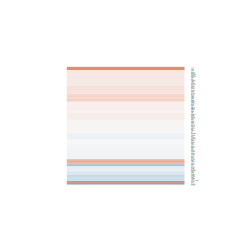 hsa04010 MAPK signaling pathway Large Map Interpret Results | 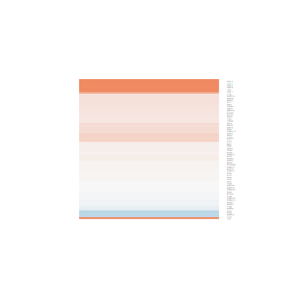 hsa05132 Salmonella infection Large Map Interpret Results | 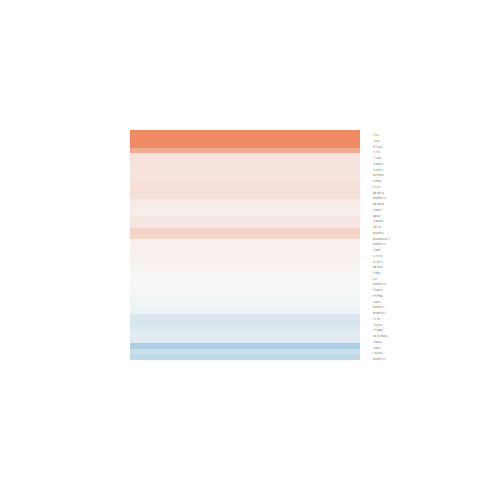 hsa05140 Leishmaniasis Large Map Interpret Results | 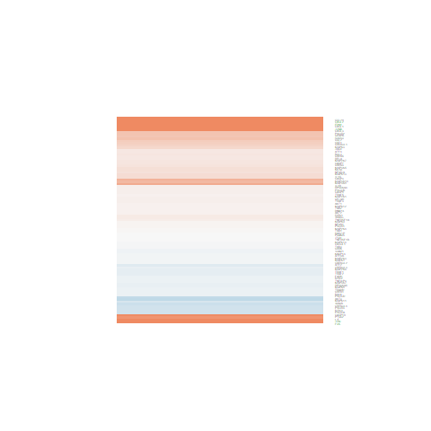 hsa04668 TNF signaling pathway Large Map Interpret Results |
| 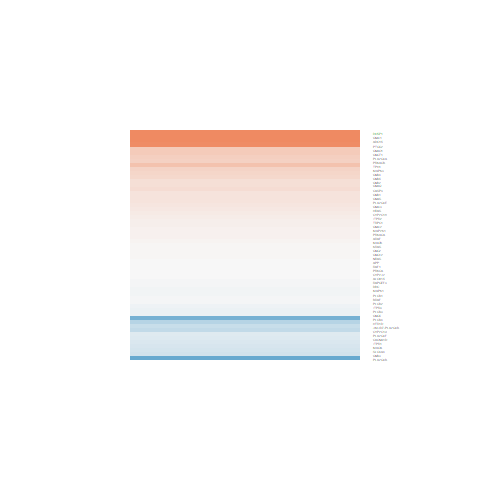 hsa04726 Serotonergic synapse Large Map Interpret Results | 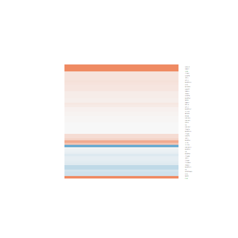 hsa05133 Pertussis Large Map Interpret Results | hsa05161 Hepatitis B Large Map Interpret Results | 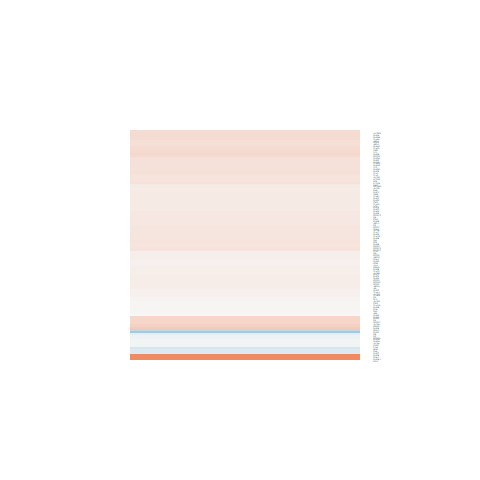 hsa05012 Parkinson's disease Large Map Interpret Results | 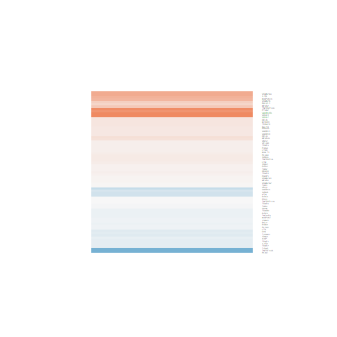 hsa04064 NF-kappa B signaling pathway Large Map Interpret Results |
hsa04151 PI3K-Akt signaling pathway Large Map Interpret Results | 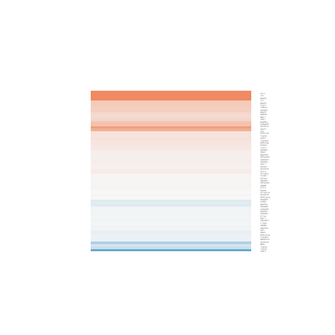 hsa04350 TGF-beta signaling pathway Large Map Interpret Results | 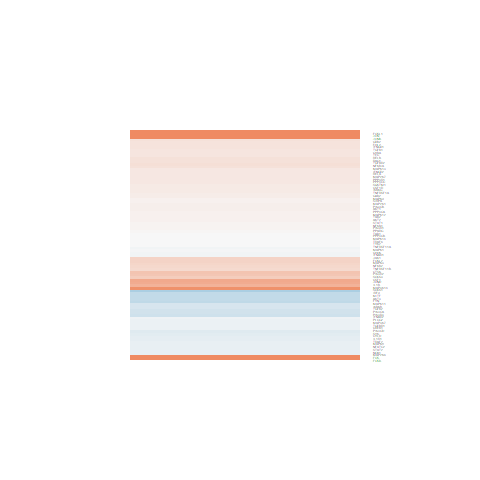 hsa04380 Osteoclast differentiation Large Map Interpret Results | 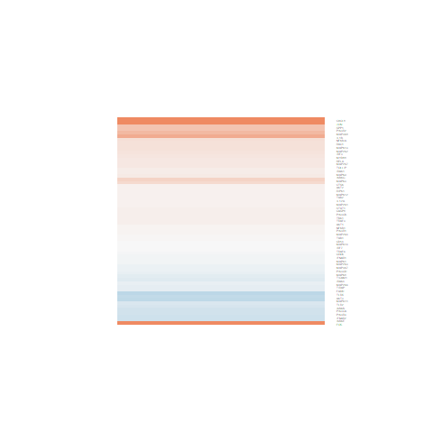 hsa04620 Toll-like receptor signaling p Large Map Interpret Results | hsa04660 T cell receptor signaling path Large Map Interpret Results |
| 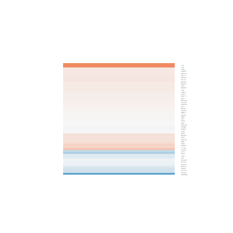 hsa04662 B cell receptor signaling path Large Map Interpret Results | 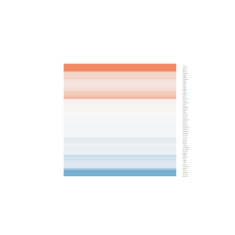 hsa04713 Circadian entrainment Large Map Interpret Results | hsa04725 Cholinergic synapse Large Map Interpret Results | 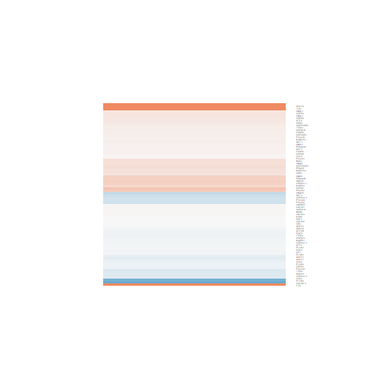 hsa04915 Estrogen signaling pathway Large Map Interpret Results | 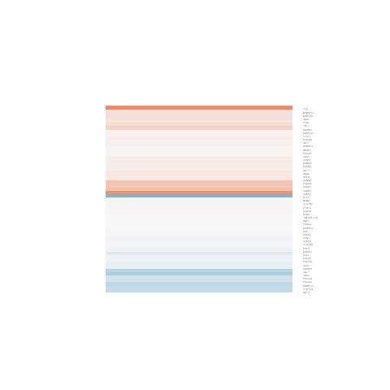 hsa04917 Prolactin signaling pathway Large Map Interpret Results |
| 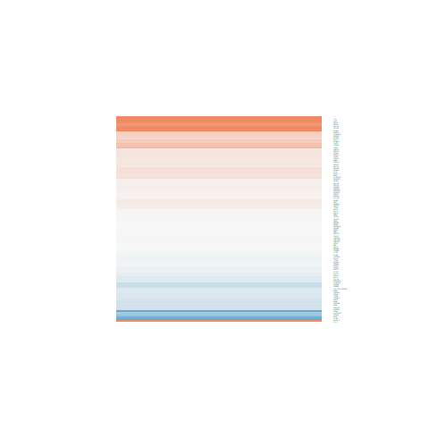 hsa04921 Oxytocin signaling pathway Large Map Interpret Results | 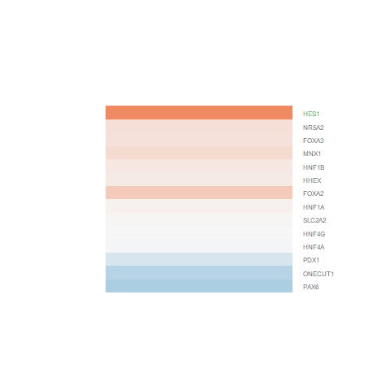 hsa04950 Maturity onset diabetes of the Large Map Interpret Results | 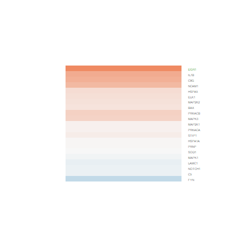 hsa05020 Prion diseases Large Map Interpret Results | 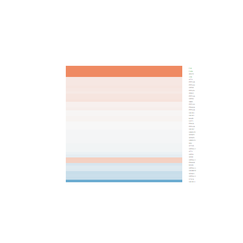 hsa05031 Amphetamine addiction Large Map Interpret Results | hsa05134 Legionellosis Large Map Interpret Results |
hsa05142 Chagas disease (American trypa Large Map Interpret Results | 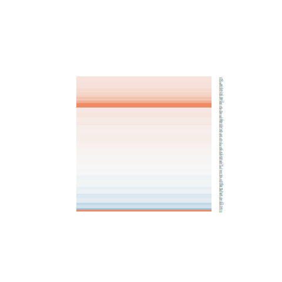 hsa05166 HTLV-I infection Large Map Interpret Results | 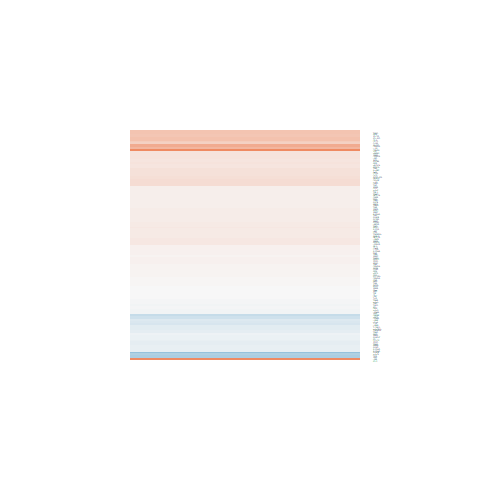 hsa05168 Herpes simplex infection Large Map Interpret Results | 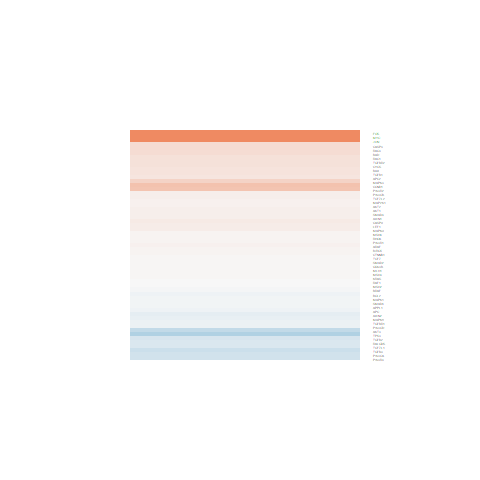 hsa05210 Colorectal cancer Large Map Interpret Results | hsa05220 Chronic myeloid leukemia Large Map Interpret Results |
| 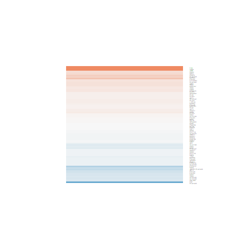 hsa05231 Choline metabolism in cancer Large Map Interpret Results | hsa03040 Spliceosome Large Map Interpret Results | 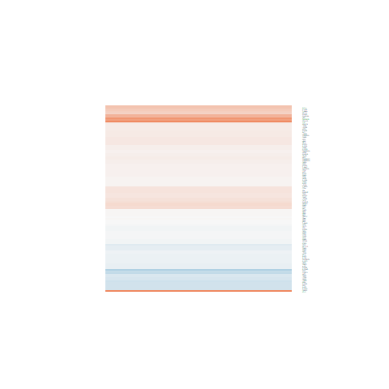 hsa04210 Apoptosis Large Map Interpret Results | hsa04390 Hippo signaling pathway Large Map Interpret Results | 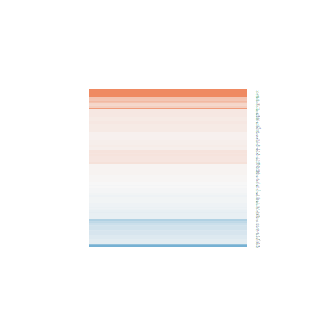 hsa05202 Transcriptional misregulation Large Map Interpret Results |